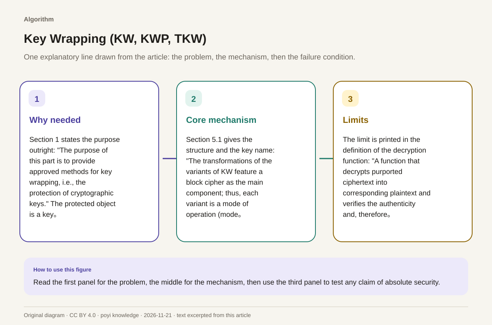
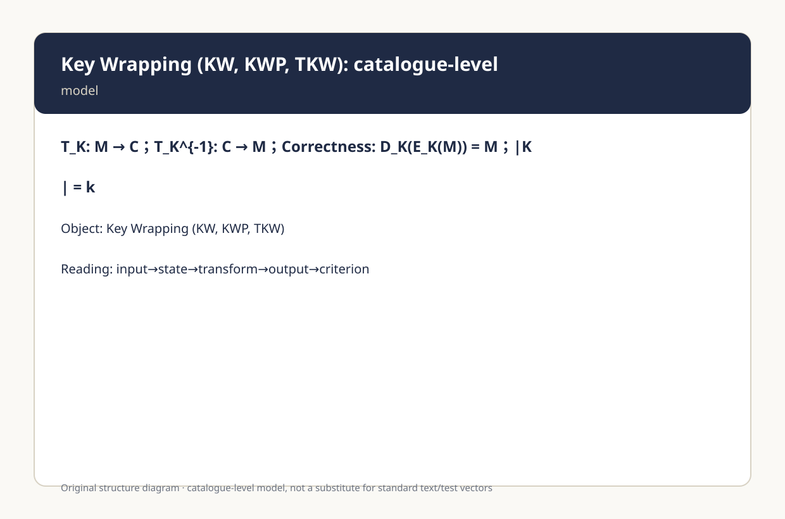

Principles
Algorithm: Key Wrap (KW 密钥包装). Section 5.1 gives the structure and the key name: "The transformations of the variants of KW feature a block cipher as the main component; thus, each variant is a mode of operation (mode, for short) of the block cipher. The key for the underlying block cipher is called the key encryption key (KEK), denoted K." The §4.1 definition of the integrity check value shows why wrapping is not plain encryption: "A fixed string that is prepended to the plaintext within the authenticated-encryption function of a key-wrap algorithm, in order to enable the verification of the integrity of the plaintext within the authenticated-decryption function."

Why it matters
Section 1 states the purpose outright: "The purpose of this part is to provide approved methods for key wrapping, i.e., the protection of cryptographic keys." The protected object is a key, and §3.1 widens the scope: "Similarly, KW, KWP, and TKW are each approved for the protection of general data, as well as cryptographic keys." Together these give the motive: keys at rest and in transit need confidentiality and integrity together, which ordinary encryption supplies only half of.
Applications
Usage follows from two sentences. §3.1 says "KW, KWP, and TKW are each approved for the protection of general data, as well as cryptographic keys", so all three variants serve general data too; §5.1 says "each variant is a mode of operation (mode, for short) of the block cipher", so implementations plug them in as block cipher modes. Key stores, HSMs and key-distribution paths therefore wrap protected keys under a KEK, with KWP covering padded cases and TKW the non-AES case.

Limits & attacks
The limit is printed in the definition of the decryption function: "A function that decrypts purported ciphertext into corresponding plaintext and verifies the authenticity and, therefore, the integrity of the data. The output is either the plaintext or an indication that the plaintext is not authentic." Wrapping offers no best-effort decryption: verification failure returns no plaintext, so an attacker cannot probe with partially decrypted output. The same section defines authenticity in this context as originating from an entity holding an implementation of the authenticated-encryption function with the KEK.
History
Section 1 places the document in its series: "This publication is the sixth part in a series of Recommendations regarding the modes of operation of block ciphers." Section 3.1 fixes the boundary with earlier specifications: "In 2009, a different padding scheme was specified in RFC 5649 [4], referencing elements of the specification in [11]. The resulting algorithm, called AES Key Wrap With Padding, is essentially equivalent to KWP as specified in this Recommendation." RFC 3394 (2002) and RFC 5649 (2009) therefore precede this December 2012 recommendation.
Worked example & verification
Formal model and reproduction steps
[C=E_K(P;r),\qquad P=D_K(C)]
Key Wrap: the registered public parameters, key material or randomness, and message are mapped through the stated transformation to an output checked against the registered criterion. The worked example is a structural reproduction, not a new test vector; parameter ranges, standard versions and implementation details remain source-bound.
References
- Wikipedia search entry for KW 密钥包装. https://zh.wikipedia.org/w/index.php?search=KW%20%E5%AF%86%E9%92%A5%E5%8C%85%E8%A3%85
- Handbook of Applied Cryptography (Menezes, van Oorschot, Vanstone). https://www.cacr.math.uwaterloo.ca/hac/